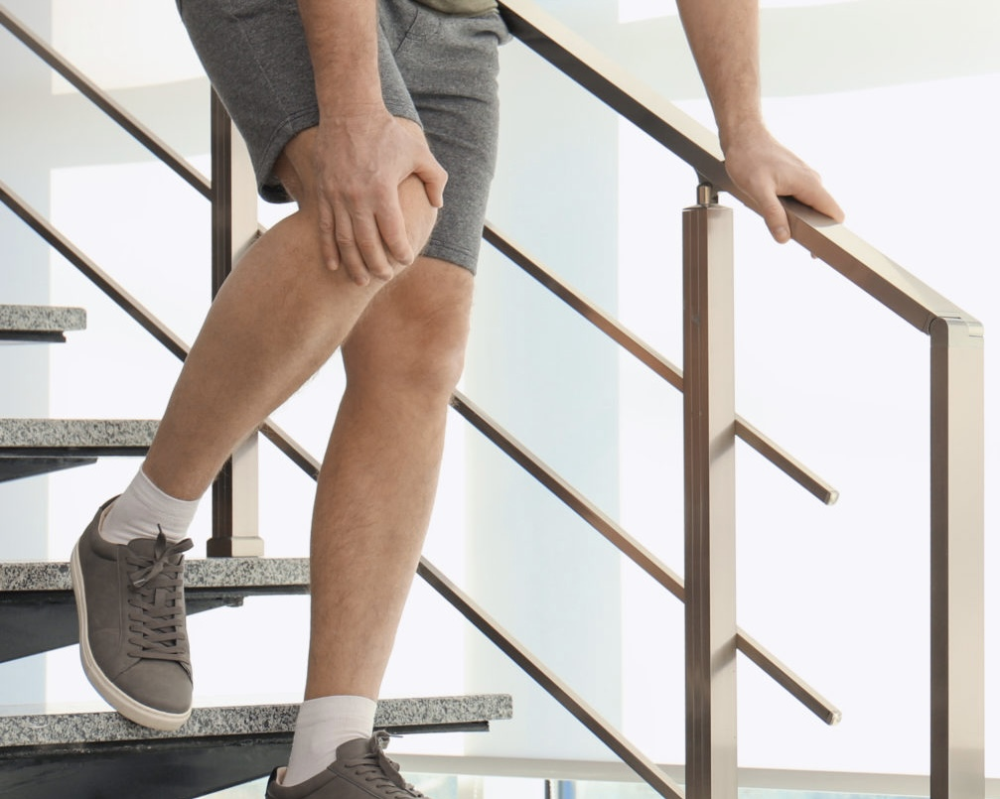
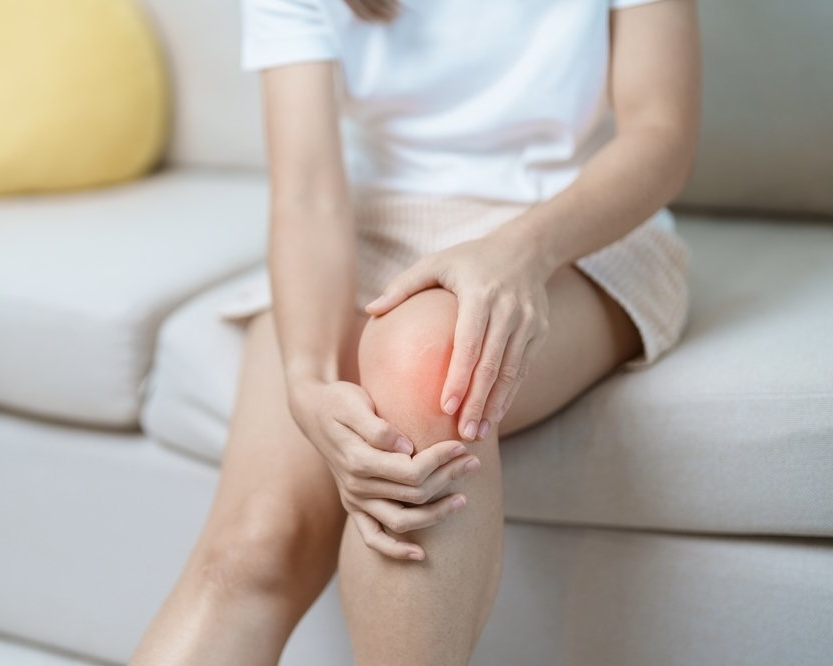
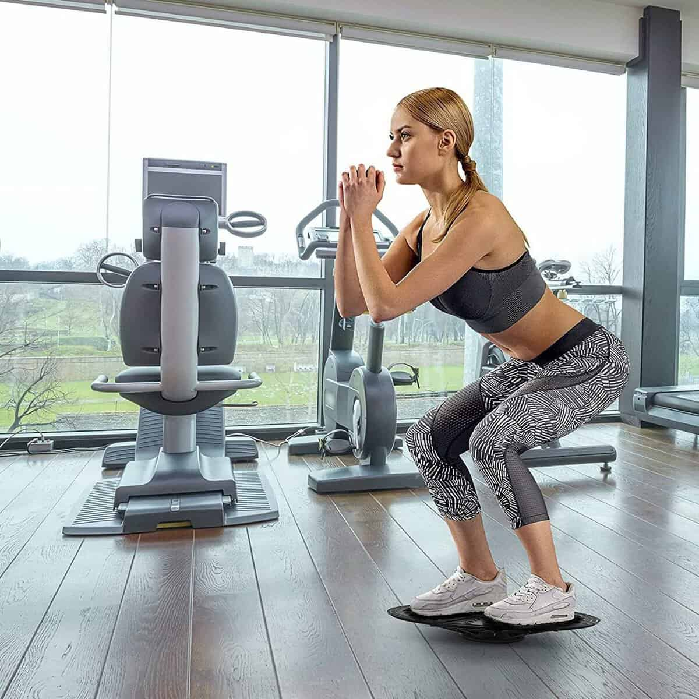
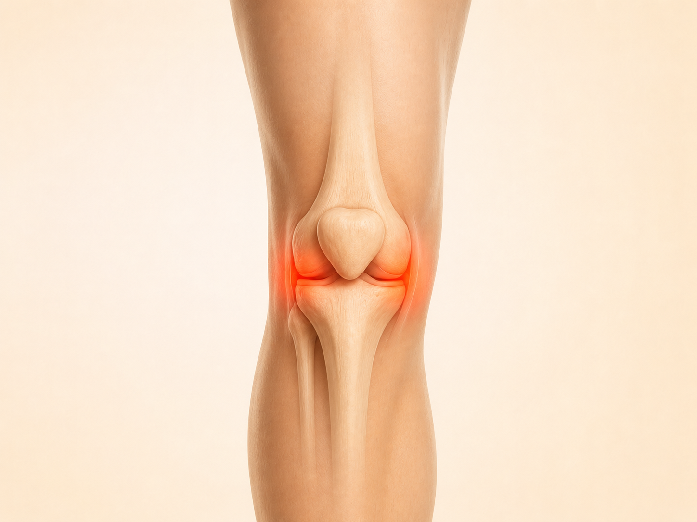
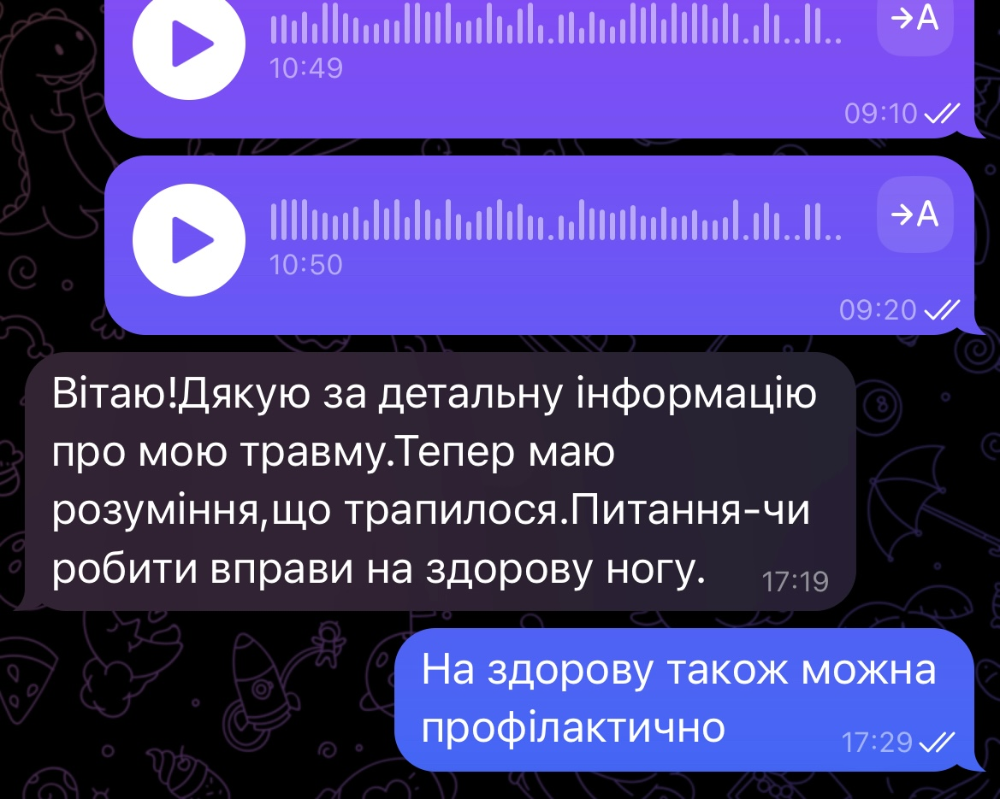
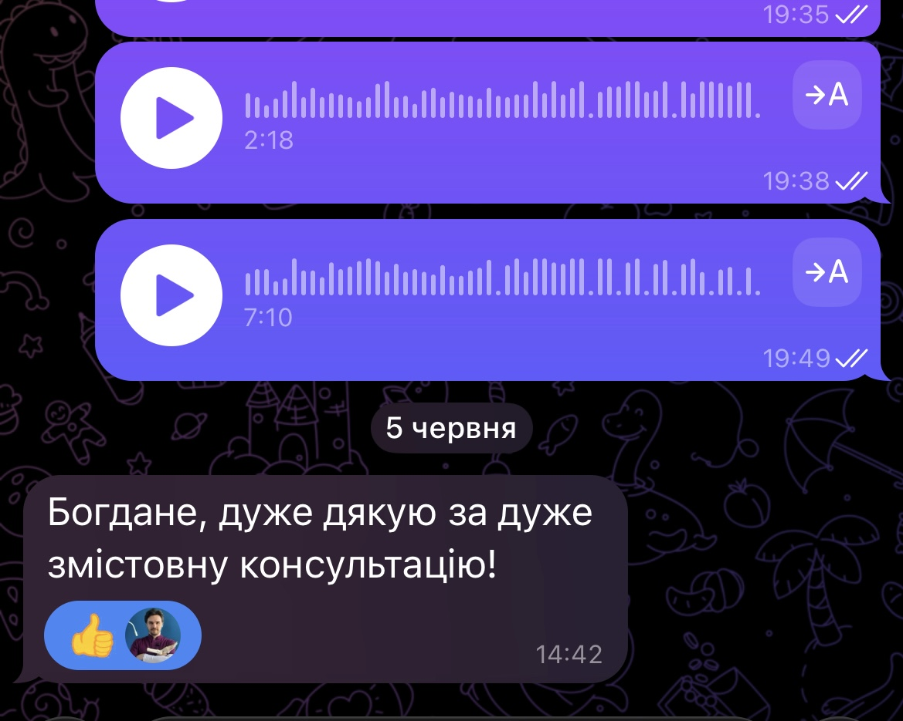
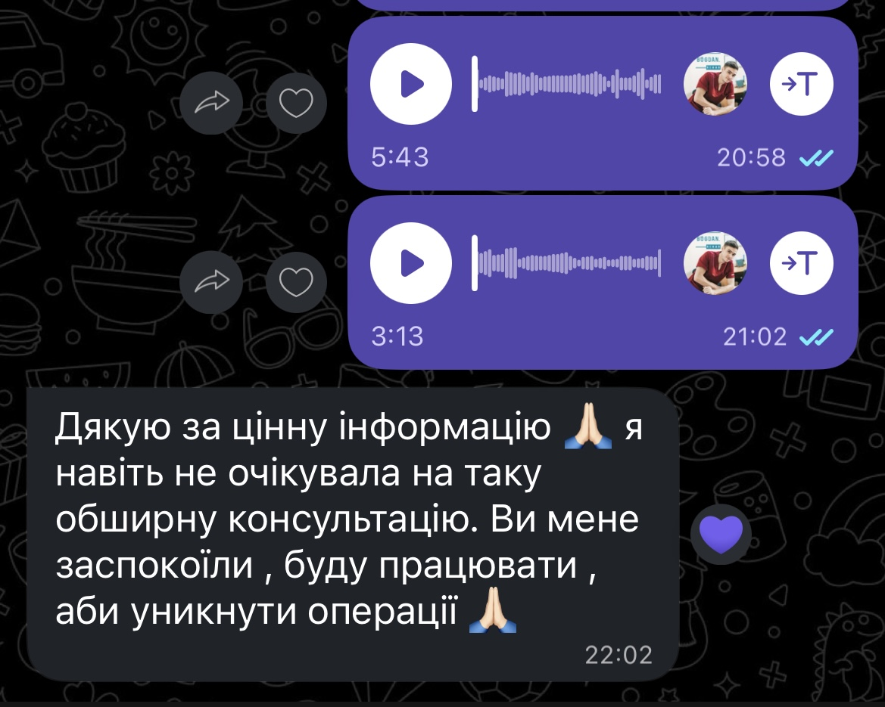

Занадто швидко повернули навантаження
Стало легше — і людина одразу повертається до бігу, футболу, залу або попереднього обсягу активності. Симптоми вже менші, але сила, витривалість і контроль ще можуть бути недостатніми.
Авторська програма від фізичного терапевта із понад 10-річним досвідом
Покрокова програма допоможе зрозуміти, які вправи виконувати зараз, як дозувати навантаження та коли переходити до складнішого рівня — щоб поступово повернути силу, контроль і витривалість коліна.
Повна програма за 390 грн 1899 грн
Доступ одразу після оплати • Telegram • 14 днів гарантії
1200+ учасників уже отримали програму
Чому проблема може повертатися
На консультаціях я найчастіше бачу три сценарії. Вони різні, але в кожному випадку навантаження перестає відповідати тому, до чого коліно готове саме зараз.
Стало легше — і людина одразу повертається до бігу, футболу, залу або попереднього обсягу активності. Симптоми вже менші, але сила, витривалість і контроль ще можуть бути недостатніми.
Через страх повторного болю, стару травму, артроз або зміни на МРТ людина починає надмірно берегти коліно й не розуміє, які вправи вже можна виконувати без зайвого страху.
Один комплекс може дати перші зміни. Але далі виникає головне питання: коли додати вагу, ускладнити вправу або повертатися до більшої активності?
Спільна причина
Або його стає забагато і занадто швидко, або занадто мало через страх, або воно змінюється хаотично. Тому важливо не просто «прибрати біль», а поступово повернути коліну здатність переносити потрібний вам рівень активності.
Чому просто знайти вправи недостатньо
У YouTube, Instagram чи TikTok є десятки безкоштовних комплексів. Але вони рідко відповідають на питання, який рівень підходить вам зараз і коли потрібно рухатися далі.
Як має виглядати системне відновлення
Починаєте з доступного рівня, контролюєте реакцію коліна й переходите далі не навмання, а за зрозумілими орієнтирами.
Вправи відповідають тому навантаженню, яке коліно переносить зараз.
Зрозуміло, скільки повторень і підходів виконувати.
Оцінюєте стан під час вправ, після заняття та наступного дня.
Перевіряєте, чи готові переходити до наступного рівня.
Поступово додаєте складність і повертаєте потрібну активність.
Саме так побудована програма
Одна й та сама вправа може бути доречною на одному етапі й занадто легкою або складною на іншому. Тому програма не видає всі матеріали як один випадковий список.
Звичайний комплекс з інтернету
Покрокова програма
Саме тому 2 етапи, тести й 70+ відео — це не просто «більше матеріалів». Вони потрібні, щоб ви розуміли свій поточний рівень і наступний крок.
Подивитися, як побудована програмаСаме так побудована програма
Етапи, вправи, тести, бонусні матеріали та нагадування зібрані в одному місці. Не потрібно самостійно складати план із десятків різних відео.
Коротко про досвід учасників


Кому особливо корисна така структура
Вище ми вже розібрали логіку відновлення. Тут — типові ситуації, у яких особливо важливо мати зрозумілу прогресію навантаження.

Коли ходьба, підйом або спуск сходами провокують дискомфорт і хочеться повернути ці навантаження поступово.

Коли гострий етап уже минув і фахівець дозволив активне відновлення, але незрозуміло, як поетапно повертати навантаження.

Коли симптоми тривають давно або повертаються після періодів спокою, лікування чи коротких комплексів вправ.

Для тих, кому важливо не зупинитися на полегшенні симптомів, а поступово підготувати коліно до залу, бігу, спорту чи активного життя.
Тепер — сам продукт
Основне вже зібране в готову послідовність: вправи, дозування, етапи та критерії переходу.

70+ коротких відео з технікою, кількістю повторень, підходами та варіантами прогресії.

Два етапи: від базової рухливості, активації та контролю — до сили, стабільності й активніших навантажень.

Тести й критерії допомагають оцінити реакцію коліна та не форсувати перехід до складніших вправ.

PDF-комплекси можна зберегти на телефон або роздрукувати, щоб не шукати кожну вправу окремо.
Ви не отримуєте всі вправи одним списком. Програма веде крок за кроком і підказує, коли варто залишитися на поточному рівні, а коли можна рухатися далі.
Отримуйте нагадування та використовуйте готові PDF-плани на телефоні, щоб займатися у зручному темпі навіть офлайн.
Додатково до основної програми
Дискомфорт у різних зонах коліна може мати різні особливості. У бонусних відео я пояснюю, на що варто звернути увагу та як адаптувати вправи під свою ситуацію.

Чому неприємні відчуття можуть з’являтися під час присідання, спуску сходами або тривалого сидіння та на які м’язи й рухи варто звернути увагу.
Пателофеморальний дискомфорт

Що може впливати на появу неприємних відчуттів під час стрибків, бігу, присідання або різкого збільшення навантаження.
Зона сухожилля надколінка — «коліно стрибуна»

Чому зовнішня зона може нагадувати про себе під час бігу, тривалої ходьби або повторюваних згинань коліна.
Так зване «коліно бігуна»

Як поводитися після можливої травми меніска, які симптоми потребують додаткової перевірки та як поступово повертати навантаження.
Травми та зміни меніска

Як вправи й поступове дозування навантаження можуть допомагати підтримувати рухливість, силу та повсякденну активність.
Вікові зміни й артроз коліна

З чого починати після травм зв’язок, тривалої перерви або періоду обмеженого навантаження та як поступово повертати контроль рухів.
Відновлення після травми коліна
Не знаєте, як краще стартувати саме у вашій ситуації?
Окрім повного доступу до програми, ви отримаєте можливість поставити свої запитання, показати обстеження та отримати рекомендації щодо того, як краще почати саме у вашому випадку.
Ви надсилаєте інформацію, документи та відео у зручний час. Богдан особисто переглядає матеріали, відповідає й пояснює рекомендації зрозумілою мовою.
Що ви отримуєте
Після індивідуальних рекомендацій
Нижче — реальні повідомлення після персонального розбору.



Доступ відкривається одразу після оплати — чекати окремого «старту потоку» не потрібно. Обидва формати містять повну програму; за 890 грн додатково ви отримуєте персональний розбір стартової ситуації.
14 днів гарантії повернення коштів
Формат без дзвінків — у зручний для вас час
Поширені запитання
Якщо у вас залишилося питання про діагноз, навантаження, формат або доступ — найчастіші відповіді зібрані нижче.
Можна спробувати без зайвого ризику
Якщо після знайомства з матеріалами ви зрозумієте, що формат вам не підходить, напишіть протягом 14 днів — оплату буде повернено.